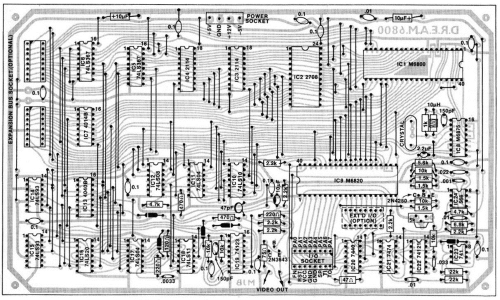
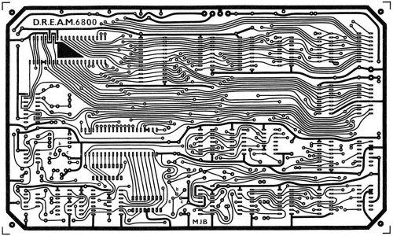
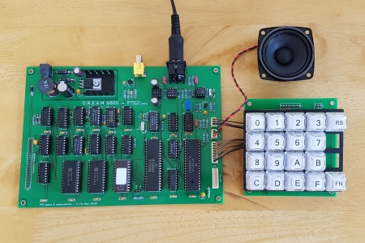
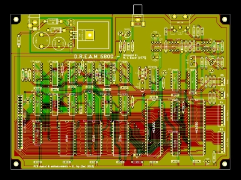
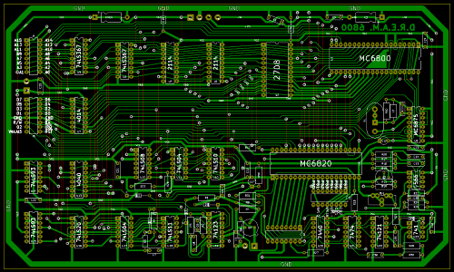
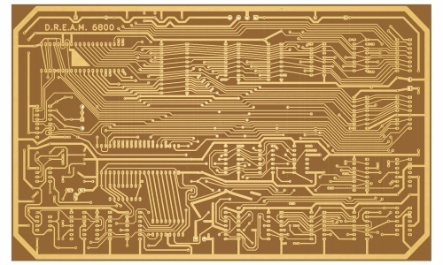
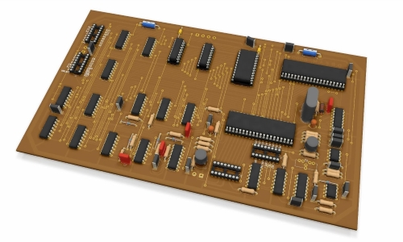

A while ago I got a huge amount of old Chips, including a Ceramic MC6800 CPU. I wanted to build a Computer around this nice looking Chip and decided to recreate the D.R.E.A.M. 6800, published in the magazine "Electronics Australia" in 1979 and designed by Michael Bauer.

The first thing I had to start with was the Circuit Board. After I looked around a bit, I found two Versions:
The first one was the original layout shown in the EA Article:
 David Fry made a 40th Anniversary thats mostly identical, only the two 2114 RAM chips were changed to 6116 RAM Chips and the 2708 EPROM was changed to a 2716/2732 EPROM, and the whole circuit had been highly compressed onto a double-sided PCB:
 Because the Original pcb had such a bad resolution I first decided to remake the whole board in Kicad. I wanted to keep the original look of the Computer, first because it looks really unique and second because it is only single-sided and therefore "easy" to etch myself. I simply used the schematics of the 40th Anniversary version and simply remade the whole circuit board. Here is the Result of that:
  You can download the Kicad files here: DREAM6800.rar
I wasnt pleased with the outcome, not because it looked bad, but because the clearances were a bit tight. Thats why I decided to use the original board design. The quality isnt very good, but after hours of fiddeling around with image editing software I managed to get a good output. With the help of the Kicad bitmap2component tool I adjusted the size and printed it on transparent paper to etch the circuitboard. If you want to use this design you can find it in the Eco1.User Layer of the DREAM6800.rar project or this pdf file. After two failed attempts I got a really well etched board. Next step was to mount all the Components.